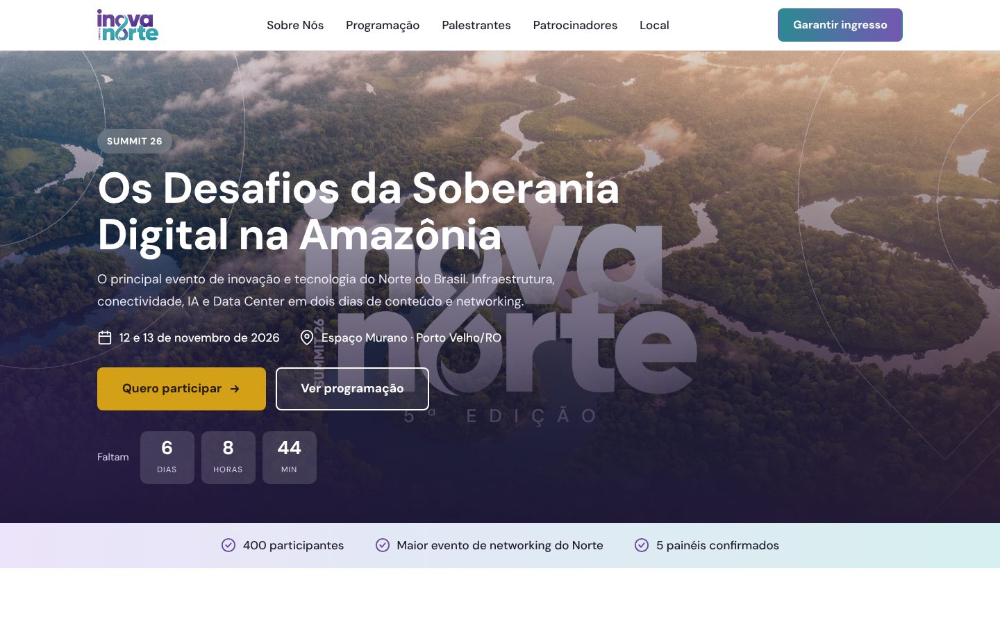
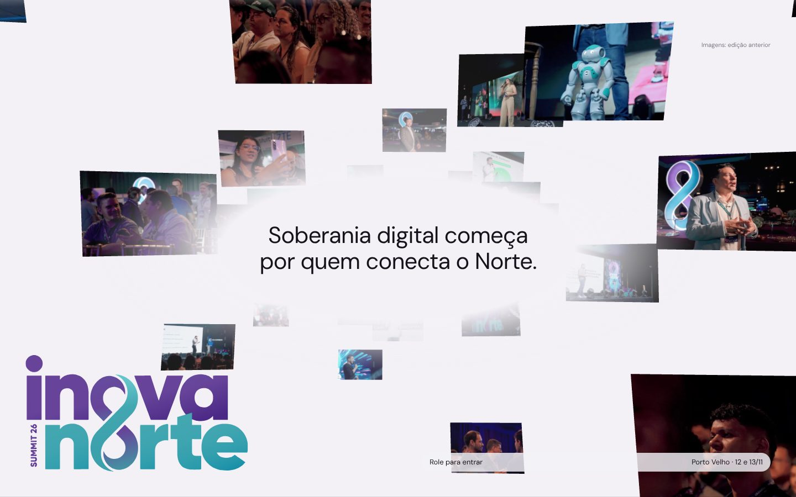
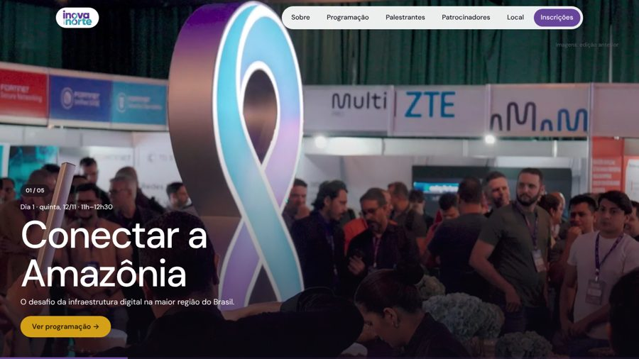

Versão 1
Nossa versão
Fiel ao site original, com UX melhorada.
Fundo roxo e cartões translúcidos Contagem regressiva, 11 palestrantes, patrocinadores, hotel Vídeo do YouTube (só toca via http/https) Abrir versão 1

Versão 2
Ideia do marketing
Arquivo recebido, sem alterações.
Visual editorial claro, fotos da edição anterior Programação completa com horários (20 atividades) Palestrantes e patrocinadores ainda "em breve" Abrir versão 2
Versão 3
Mesclada
Visual do marketing + conteúdo e UX da nossa.
Vídeo local no topo, toca sozinho em qualquer lugar Programação com horários e filtros por dia e tipo Palestrantes, patrocinadores, hotel, mapa e inscrição em destaque Abrir versão 3

Versão 4
Mesclada + túnel 3D
A versão 3 com o túnel de fotos do marketing.
Fotos da edição anterior flutuando em 3D conforme você rola Os 5 painéis entram em tela cheia, um a um Só em telas grandes; no celular ou com "reduzir movimento" mantém os cartões Abrir versão 4
Versão 5
Versão ideal
Refeita do zero com o melhor das três, foco em UX e desempenho.
Logo legível no topo e rodapé sem logo gigante Programação por dia, painéis em destaque, .ics para o calendário Biografias em janela, mapa sob demanda, FAQ e barra de inscrição no celular Abrir versão 5
Lado a lado
Esquerda
1 · Nossa versão 2 · Marketing 3 · Mesclada 4 · Mesclada + túnel 3D 5 · Versão ideal Direita
1 · Nossa versão 2 · Marketing 3 · Mesclada 4 · Mesclada + túnel 3D 5 · Versão ideal
No lado a lado, cada versão aparece em meia largura, então o layout de celular pode entrar em ação. Para ver o desktop completo, use o botão "Abrir".